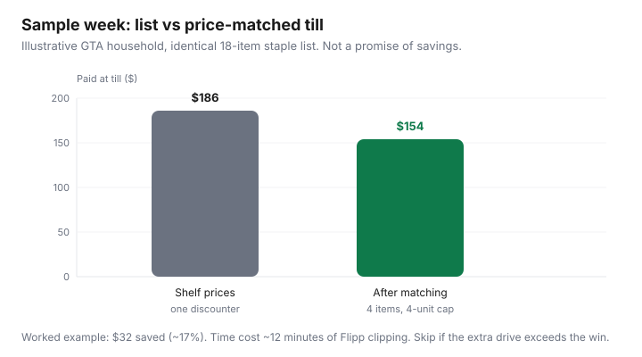

Food & Groceries · Canada
How to build a Flipp price-matching system that actually cuts your grocery bill
Canadians do not lose money because they have never heard of price matching. They lose it because flyer hunting feels messy, every banner writes a different policy, and Walmart Canada stopped matching competitor ads — so advice copied from U.S. blogs sends you to the wrong till.
This is a Flipp-first system for banners that still do the work: No Frills, FreshCo (and Chalo! FreshCo), Real Canadian Superstore, Giant Tiger, Maxi, and Save-On-Foods in many markets. You clip a short list, match identical items, redeem loyalty on the way out, and stop when the extra time does not pay.
Disclosure: Flipp itself is not an affiliate product. Cashback portals and grocery gift cards are offer types that sometimes sit beside flyer shopping. Saving Optimizer may earn a commission if we later add those links. We do not invent partnerships, and this system does not require any.
Key takeaways
- Flyer-first shopping beats impulse shopping because the menu is decided before you are hungry in aisle 6.
- No Frills matches; FreshCo often beats by 1¢. Walmart Canada does not match competitor flyers.
- Expect identical-item rules, a common four-unit cap, and long exclusion lists (loyalty prices, online-only, spend-X-get-X).
- Use Flipp screenshots that show dates and size. The till is not a debate club.
- Multi-store trips win only when the documented gap beats fuel, parking, and an extra hour.
Why flyer-first shopping beats impulse shopping in Canada
Canadian grocery inflation cooled in headline terms — food purchased from stores rose 2.8% year over year in August 2026, slower than the all-items CPI of 3.0% (Statistics Canada Daily, 14 Sep 2026). The cart still feels expensive because the five-year climb is large: store-food prices were 29.0% higher than August 2021 on that same release.
Impulse shopping pays that entire stack at whatever shelf sticker is in front of you. Flyer-first shopping decides protein and two staples at the kitchen table, then uses the store as a fulfilment centre. Price matching is optional leverage on top of that decision, not a sport.
Set up Flipp (or Reebee) for your local banners in 10 minutes
- Install Flipp. Allow location or set your city so local flyers appear.
- Favourite two banners you will visit this month — your discounter, plus a matcher if different.
- Search your staples (your milk size, your chicken brand, your coffee). Clip only identical items you would buy anyway.
- Screenshot the full ad: logo, item, size, price, date range. Cropped tiles get refused.
- Build the week’s dinners from clipped proteins, then fill gaps with store-brand staples at unit price.
Reebee is a reasonable substitute if it shows your banners more cleanly. The system is “one flyer app,” not an app collection.
Which Canadian stores still price match — and which stopped
Policies change by franchise and by city. The table is a starting map, not a legal opinion. Always read the competitor list at your store.
| Banner | Program (typical) | What it does | Usual quantity cap |
|---|---|---|---|
| No Frills | Won’t Be Beat | Matches a qualifying local major-supermarket ad on identical / comparable items | Often 4 units |
| FreshCo / Chalo! | Lowest Price Guarantee | Sells the identical eligible item for 1¢ less than the competitor flyer | Often 4 units |
| Real Canadian Superstore | Store-level match | Many locations match local flyers; competitor lists vary | Ask the till / posted sign |
| Giant Tiger | Store-level match | Widely reported to match grocery flyers; still local | Ask the till |
| Maxi (QC) | Store-level match | Quebec discounter; confirm the in-store list | Ask the till |
| Save-On-Foods (West) | Price matching (local) | Western staple; rules and competitors are store-specific | Ask the till |
| Walmart Canada | No competitor ad match | Does not match other grocers’ flyers. Others may match Walmart. | n/a |
| Metro, Food Basics, Sobeys, Shoppers | Generally no flyer match | Use loyalty offers and unit prices instead | n/a |
FreshCo’s public legal language (reviewed Sep 2026) names typical Ontario competitors as No Frills, Food Basics, Real Canadian Superstore, and Walmart, and a Western set that includes Save-On-Foods. No Frills tells you to check the list in store and excludes loyalty member pricing, exclusive email/online offers, spend-X-get-X, Save it Forward windows, pharmacies, gas, and many third-party counters.
The identical-item rule, 4-unit caps, and common exclusions
Identical usually means same brand, same size, same flavour or attributes. Produce, meat, and bakery are often “same type and attributes,” which is squishier — a cashier can say no. Private label is sometimes matched to a comparable store brand, sometimes not. Do not bring a no name can to match President’s Choice and expect a speech to work.
Four units per item is the number you should plan around at No Frills and FreshCo. That is enough for a week of yogurt, not a bunker. Online-only cart prices, misprints, clearance, “free” promotions, and loyalty-app member prices are the usual exclusions. If the cheap price exists only after you scan a personalized offer, it is probably not a flyer match.
A weekly workflow: clip, list, match, redeem loyalty
Park this inside the weekly grocery system. Sunday: clip five high-dollar identical items, not fifty 30¢ wins. Shop the matching banner. At the till, one screenshot per item, calm voice, quantity within cap. Then scan PC Optimum or Scene+ so you are not leaving points on a cart you already paid for.
Till etiquette: have the ads ready before unloading. Matching is a normal transaction in these stores. It is not a confrontation and it is not a personality.
When multi-store trips beat one-stop convenience
Two stores win when you can document a gap larger than the trip. Worked example (estimate): a $12 difference on chicken and coffee, 6 km extra round trip, no parking fee — go. A $3 difference across town in January, with a toddler — do not. Build a discount rotation by city, then use matching to steal the other banner’s loss leaders without a second parking lot when the policy allows it.

Sample one-week receipt: before vs after price matching
Assumptions, labelled: Greater Toronto Area, one adult shopper, No Frills as the fulfilment store, four identical national-brand items matched to a FreshCo or Walmart flyer, four-unit cap not exceeded, no loyalty member-only prices. Shelf total $186. Matched total $154. Loyalty offers on other lines might add a few dollars more; they are not in the chart because they are not price matching.
If that $32 took an extra 40-minute drive, the hourly rate collapses. If it happened in a store you were visiting anyway, it is one of the cleanest “found” dollars in Canadian grocery shopping.
Mistakes that waste time without saving money
- Clipping every 50¢ item instead of three proteins and two staples.
- Trying to match a different size, a club pack, or a U.S. circular.
- Driving to Walmart to price match — they will not match the other flyer.
- Ignoring unit price: a matched name brand can still lose to the store brand that was never on sale.
- Forgetting the competitor list is local. A downtown No Frills list is not a suburban one.
- Turning the till into a lecture. Take the no, write it in the price book, shop the list.
Price matching is a scalpel. The weekly system is the operating room. Use both, then go home and cook the thighs.
Sources & date stamps
- No Frills, “Won’t Be Beat” price match collection page (public policy language reviewed 16 Sep 2026).
- FreshCo legal disclaimer, Lowest Price Guarantee (public policy language reviewed 16 Sep 2026).
- Statistics Canada Daily, CPI August 2026 (14 Sep 2026).
- Canadian how-to roundups of matching banners, including store-level reporting that Walmart Canada does not match competitor grocery ads (policies can change — verify locally).
Frequently asked questions
Does Walmart Canada still price match grocery flyers?
No. Walmart Canada does not match competitor grocery ads. Other banners may still match a Walmart flyer. Confirm the competitor list posted at your local till.
Does No Frills beat the price or only match it?
No Frills’ “Won’t Be Beat” program matches a qualifying competitor’s advertised price on an identical or comparable item. It is not a guaranteed extra-cent beat. FreshCo’s Lowest Price Guarantee is the banner that commonly sells the item for 1¢ less.
Can I use a Flipp screenshot at the till?
Usually yes, if it shows the full ad including the store name, item, size, price, and valid dates. Cropped memes and online-only prices are common refusals. Policies are set by the store’s competitor list.
Why was my price match refused?
Typical reasons: not identical (wrong size or flavour), private-label rules, loyalty or member-only pricing, spend-X-get-X, clearance, pharmacy/third-party counters, or a competitor outside that store’s geographic list. Quantity is often capped at four units per item.
Is price matching worth the time?
It is worth it when you already shop a matching banner and you clip a handful of high-dollar identical items. It is not worth a city-wide flyer hunt for 40¢ yogurt.